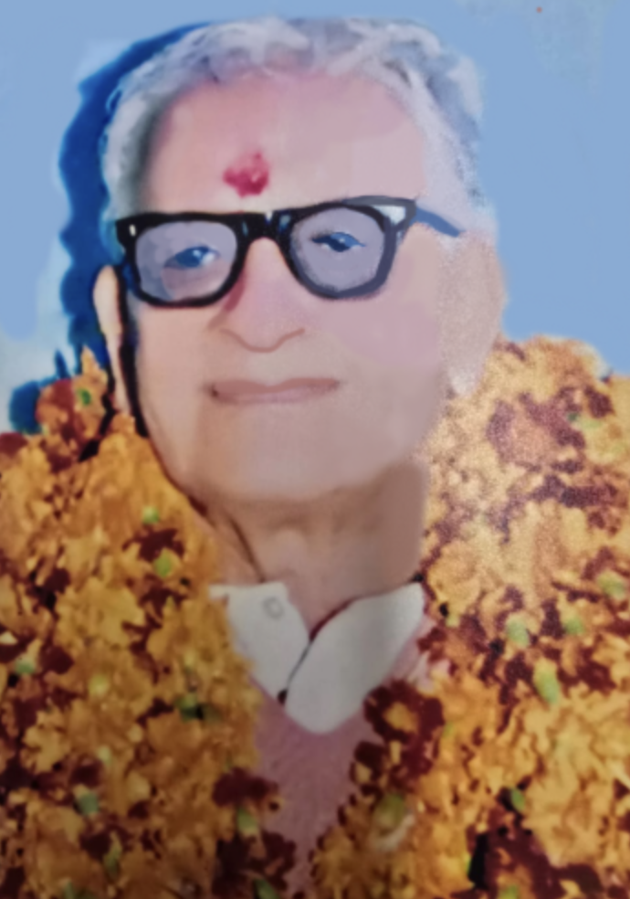
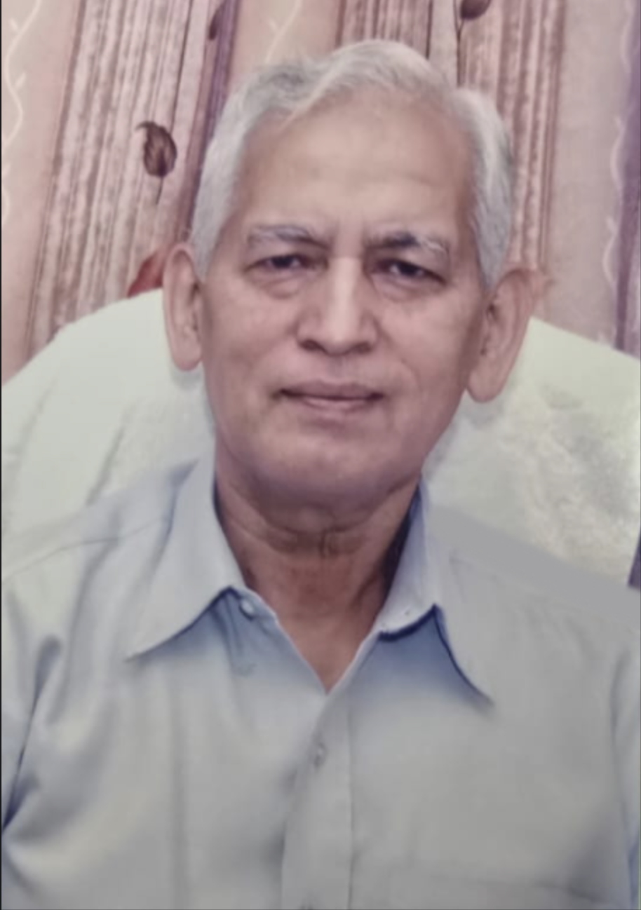

Shri Vishwanath Acharya Ji

Dr. Vir Bhushan Acharya
Our institution was established in 1985 with a single, powerful vision: to serve the poor and needy at extremely subsidised rates and to uplift society through collective participation. The foundation of this trust was laid under the guidance of the revered (Poojniya) Shri Vishwanath Acharya Ji (11 November 1920 – 1976), a saintly soul whose entire life was devoted to selfless service. The trust was formally established by Sri Satsang Sabha, Suraj Ganj (Registered Mandir).
Born on 11/11/1920 in Himachal Pradesh, Shri Vishwanath Acharya Ji received his primary education there and later moved to Firozpur for higher studies. After completing his education, he travelled extensively across almost every part of India, and even abroad. These journeys deepened his understanding of society and strengthened his lifelong mission—to serve humanity without any expectation of financial gain. For him, money was never a criterion. He believed that true service lies in purity of intent and dedication to the welfare of others. He was known for his pious nature, dedication, and simplicity, inspiring countless people to walk the path of service.
In its early days, the institution began with very small donations—sometimes as little as Re. 1. The philosophy was simple yet profound:
"Built by people, strengthened by participation, and rooted in the society it serves."
Over time, this belief bore fruit. While many contributed modestly, others donated generously, even to the tune of several lakhs, helping the institution grow while staying rooted in its original values.
During the lifetime of Shri Vishwanath Acharya Ji, the responsibilities of the institution were entrusted to Punshi Shri Satnam Das Ji,
who served diligently from 1996 to 2006. After his passing,
the trust unanimously elected Dr. Vir Bhushan Acharya (MSE, MPhil, PhD) as the Chairman of the Trust.
Dr. Acharya is a distinguished academician who retired as Vice Principal and Head of the Post Graduate Department of Physics
at DAV College, Jalandhar. He has also served as the Principal of an Engineering College and later as its Director for one year,
bringing with him vast experience in education, leadership, and administration.
Since assuming responsibility of the trust, Dr. Acharya has been serving society with unwavering commitment—overseeing
the institution’s activities, providing guidance and supervision, and ensuring that its mission continues with integrity,
transparency, and compassion. He is strongly supported by his wife, Mrs. Kiran Acharya, who actively contributes by inspiring and
extending the trust’s services for the welfare of society.
With the blessings and wholehearted support of Shri Sheetal Vij Ji, Chief Editor, Dainik Savera, who is also the Patron of the Institution, the trust continues to progress steadily and meaningfully. Our Roots The entire trust is proudly based in Jalandhar, Punjab, India, and remains committed to the ideals on which it was founded—selfless service, collective responsibility, and compassion for humanity.